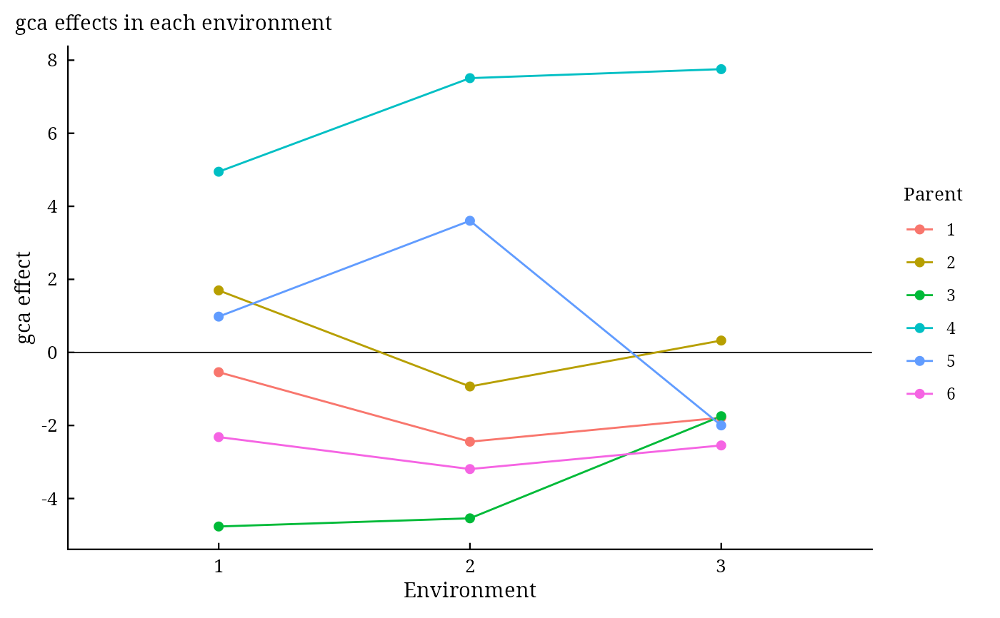

GriffingEnv() combines Griffing's analysis of the same diallel grown in several environments (locations,
years or seasons), each a randomized complete block experiment: the pooled analysis of variance with the
interactions gca \(\times\) environment, sca \(\times\) environment and, in Methods 1 and 3,
reciprocal \(\times\) environment, the effects from the means over environments, the gca effects in every
environment and, in the random model, the variance components.
Arguments
- y
response: a column of
datagiven by name (y = Yieldory = "Yield") or a numeric vector of lengthnrow(data).- Rep
replicate (block): a column of
dataor a vector, as fory.- Cross1
female parent of each plot: a column of
dataor a vector, as fory.- Cross2
male parent of each plot: a column of
dataor a vector, as fory.- Env
environment of each plot: a column of
dataor a vector, as fory. Replicate labels are taken within environments.- data
a data frame (or
data.table) with one row per plot.- Method
1(parents, \(F_1\) and reciprocals),2(parents and one set of \(F_1\)),3(\(F_1\) and reciprocals) or4(one set of \(F_1\)). No default.- Model
1(fixed effects) or2(random effects). No default.
Value
An object of class c("da_griffingenv", "da_result", "list"):
Meanstable of cross means over environments.
ANOVApooled analysis of variance (class
anova).GCAgca effects over environments;
GCA.Env: matrix of gca effects, parents by environments.SCAsca effects over environments;
Reciprocal(Methods 1 and 3) reciprocal effects.StdErrstandard errors of the effects over environments, as in
Griffing.Genetic.Components(Model 2) variance components.
ByEnvlist of the single-environment
Griffinganalyses.
Methods: print(), summary(), plot() (which = c("gca", "gcaenv", "sca", "residuals",
"qq"); "gcaenv" draws the gca effect of every parent in every environment), data.table::as.data.table(x,
component =), da_export.
Details
Let \(\mathbf{Y}_e\) be the table of cross means in environment \(e = 1, \ldots, E\),
\(\bar{\mathbf{Y}}\) their mean and \(SS_k(\cdot)\) the sum of squares of line \(k\) (gca,
sca, reciprocals) of Griffing's analysis of a table. Because each line is a projection of the table,
$$\sum_{e} SS_k(\mathbf{Y}_e) = E \cdot SS_k(\bar{\mathbf{Y}}) + \sum_e SS_k(\mathbf{Y}_e - \bar{\mathbf{Y}}),$$
the first term being line \(k\) and the second its interaction with environments, on \(f_k\) and
\((E - 1)f_k\) degrees of freedom. The environments line is \(c\sum_e (\bar{y}_e -
\bar{y})^2\) with \(c\) cells per table. Everything is on the scale of cross means;
the error is the pooled error of the block analyses divided by \(B\) (harmonic mean of the replicates over
environments), on the pooled degrees of freedom, and Rep(Env) is the pooled replicate line on the same
scale.
With Model = 1 every line is tested against the error. With Model = 2 (random genotypes and
environments) environments are tested against replicates within environments, gca, sca and reciprocals against
their interaction with environments, and the interactions against the error; with \(c_{\cdot\cdot}\) the
coefficients of the expected mean squares of the single-environment analysis,
$$\hat{\sigma}^2_{sE} = \frac{MS_{sE} - MS_E}{c_{ss}}, \quad \hat{\sigma}^2_s = \frac{MS_s - MS_{sE}}{E c_{ss}}, \quad
\hat{\sigma}^2_{gE} = \frac{MS_{gE} - MS_E - c_{gs}\hat{\sigma}^2_{sE}}{c_{gg}}, \quad \hat{\sigma}^2_g = \frac{MS_g -
MS_{gE} - E c_{gs}\hat{\sigma}^2_s}{E c_{gg}}.$$
The standard errors of the effects over environments are those of Griffing with the error variance
\(MS_E/E\).
References
Griffing, B. (1956). Concept of general and specific combining ability in relation to diallel crossing systems. Australian Journal of Biological Sciences, 9(4), 463–493. doi:10.1071/BI9560463
Singh, R. K. and Chaudhary, B. D. (2004). Biometrical Methods in Quantitative Genetic Analysis. Kalyani Publishers, New Delhi.
Zhang, Y. and Kang, M. S. (1997). DIALLEL-SAS: a SAS program for Griffing's diallel analyses. Agronomy Journal, 89(2), 176–182. doi:10.2134/agronj1997.00021962008900020005x
See also
Other DiallelAnalysisR analyses:
GardnerEberhart(),
Griffing(),
GriffingMeans(),
Hayman(),
Heterosis(),
LineTester(),
NCDesign(),
PartialDiallel()
Author
Muhammad Yaseen (myaseen208@gmail.com)
Examples
#-------------------------------------------------------------
## A Method 2 diallel of six parents in three environments
#-------------------------------------------------------------
d <-
DiallelSim(
Parents = 6
, Method = 2
, Rep = 3
, Env = 3
, Mean = 50
, gca = 4
, sca = 2
, rec = 0
, gcaEnv = 1.5
, scaEnv = 1
, EnvSD = 0
, Block = 0
, Error = 3
, seed = 1
)
fe <-
GriffingEnv(
y = y
, Rep = Rep
, Cross1 = Cross1
, Cross2 = Cross2
, Env = Env
, data = d
, Method = 2
, Model = 2
)
fe
#> Griffing's Method 2, Model 2 over 3 environments; 6 parents
#>
#> Pooled analysis of variance (cross means)
#> Df Sum Sq Mean Sq F value Pr(>F)
#> Env 2 7.2 3.6 1.043 0.408638
#> Rep(Env) 6 20.7 3.4 1.197 0.312372
#> gca 5 1669.9 334.0 13.065 0.000406 ***
#> sca 15 178.0 11.9 3.381 0.002194 **
#> gca:Env 10 255.6 25.6 8.879 8.42e-11 ***
#> sca:Env 30 105.3 3.5 1.219 0.225404
#> Error 120 345.5 2.9
#> ---
#> Signif. codes: 0 ‘***’ 0.001 ‘**’ 0.01 ‘*’ 0.05 ‘.’ 0.1 ‘ ’ 1
#>
#> gca effects over environments
#> 1 2 3 4 5 6
#> -1.5908 0.3632 -3.6848 6.7366 0.8618 -2.6860
#>
#> Genetic components
#> Components
#> gca 12.5026
#> sca 2.7849
#> gca:Env 2.7566
#> sca:Env 0.6301
#> Error 2.8789
#> gca/sca 4.4894
fe$GCA.Env
#> 1 2 3
#> 1 -0.5412463 -2.4440884 -1.7870610
#> 2 1.6974155 -0.9326727 0.3247884
#> 3 -4.7657449 -4.5420635 -1.7465448
#> 4 4.9468433 7.5085031 7.7543988
#> 5 0.9801016 3.6039237 -1.9986403
#> 6 -2.3173691 -3.1936023 -2.5469410
plot(x = fe, which = c("gca", "gcaenv", "sca", "residuals", "qq")[2])
